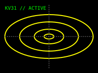

Main Menu

Best viewed in Netscape Navigator 3.0
Visitors
|
Project KV31
Project KV31 is ASYNC's most ambitious undertaking: the development and operation of the Low-Proximity Magnetic Distortion System (LPMDS), commonly referred to as "The Machine" or "The Threshold".
Building upon prototypes from the early 1980s, the LPMDS utilizes concentrated magnetic waves to deform the fabric of reality, allowing stable access to an extradimensional space designated as "The Complex".
Milestone: The gateway to The Complex was successfully and formally opened on October 17, 1989.

LPMDS Distortion Simulation
[ Return to Main Menu ] |